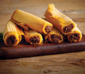
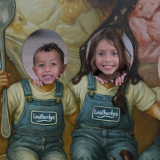

Beef Tamales
by The Albas and Nieves Christmas Experiments

A "trial by fire" recipe built from 2 families experimenting. You can make hundreds, or two, depending on how you feel (we measure by the heart).

A "trial by fire" recipe built from 2 families experimenting. You can make hundreds, or two, depending on how you feel (we measure by the heart).
It might have taken us 5 years to figure it out, but they are GOOD.
The fact we couldnt get the balance right for 5 years was exhausting. I want to do something else this Christmas.
We love tamales! We still eat them for the rest of the year!
